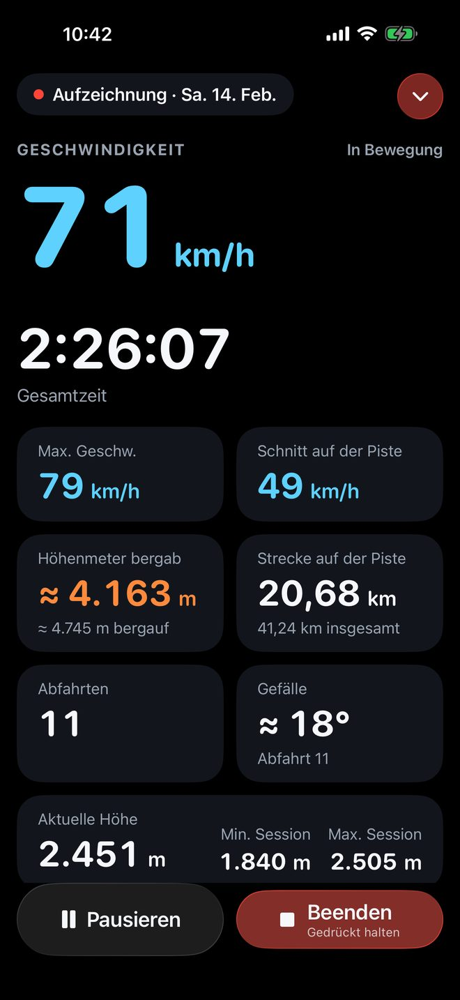
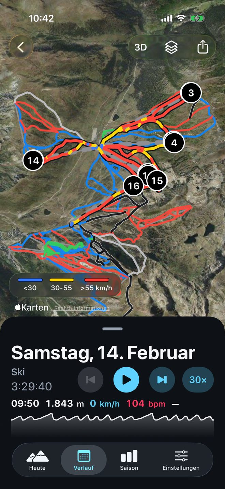
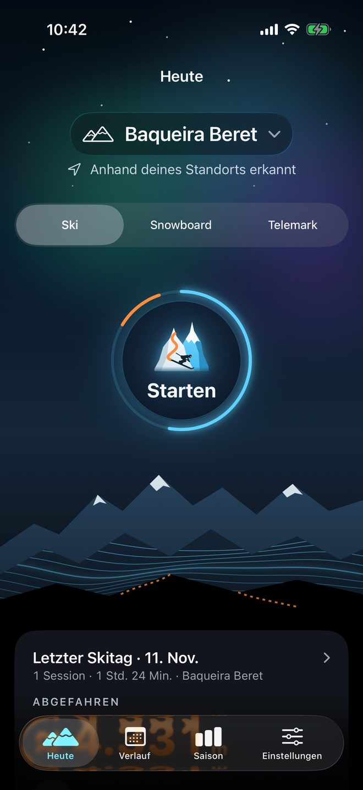
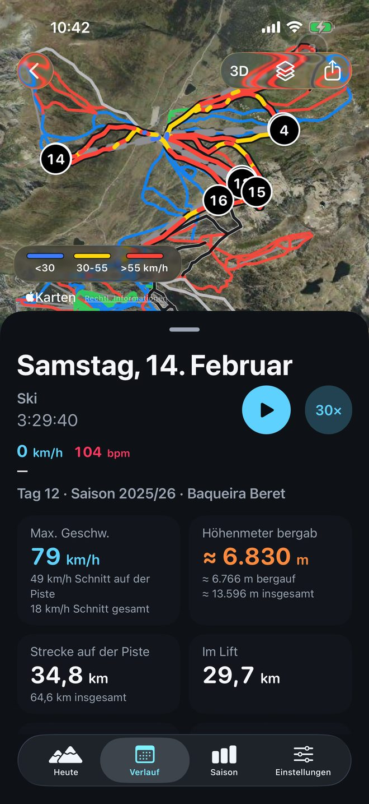
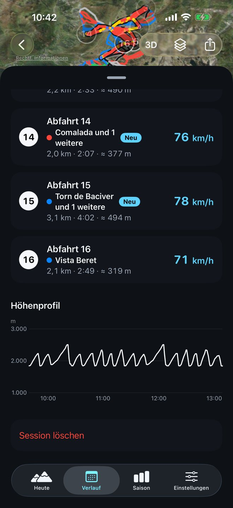
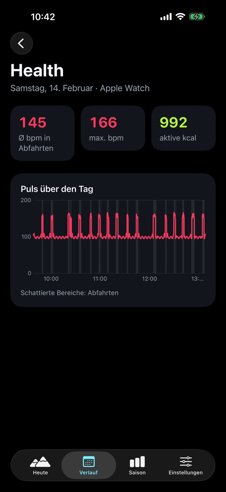
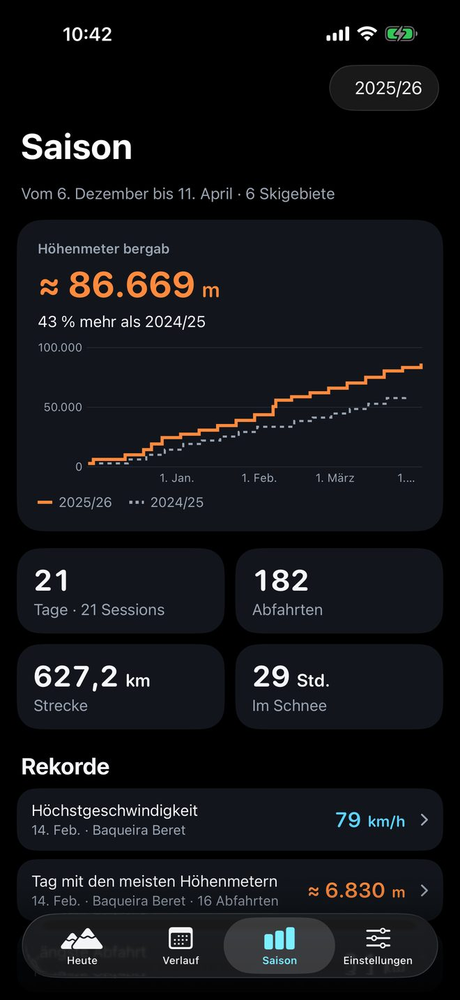
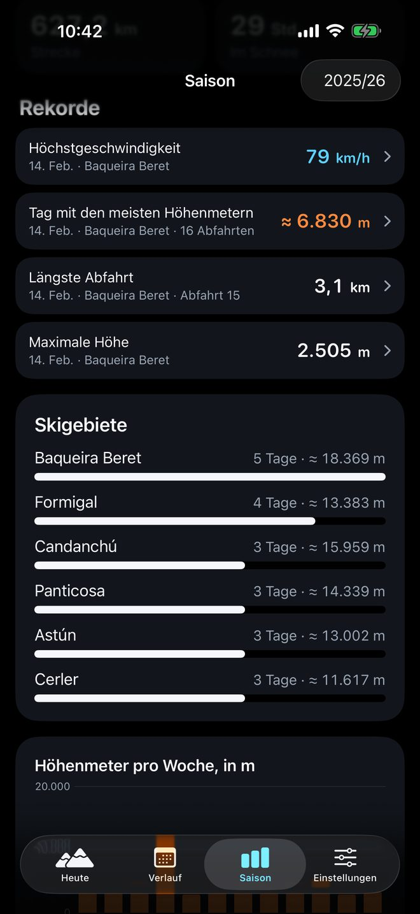
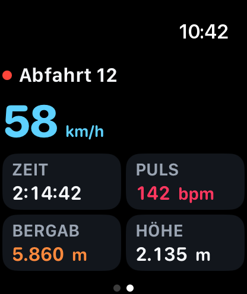
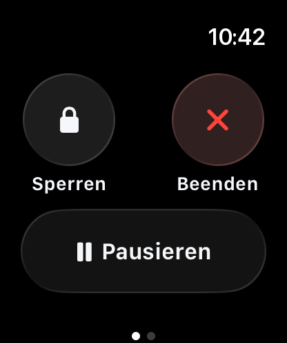

Jede Abfahrt,
erfasst.
Geschwindigkeit, Höhenmeter und jede Abfahrt deines Skitags, auf iPhone und Apple Watch.

Jede Abfahrt, in Echtzeit.
Tippe auf „Starten“ und vergiss es. SnowTracker unterscheidet Abfahrten und Lifte von selbst und zeigt dir, in welcher Abfahrt du bist, wie schnell du fährst, wie viele Höhenmeter du abgefahren bist und wie steil die Piste ist. Bei gesperrtem iPhone bleibt die Session auf dem Sperrbildschirm, mit „Pause“ immer griffbereit.

Dein ganzer Tag auf der Karte.
Die Route des Tages, nach Geschwindigkeit eingefärbt, auf Apple Karten, jede Abfahrt nummeriert und darunter die Pisten nach Schwierigkeit und die Lifte. Tippe auf eine Abfahrt, und die Karte zeigt sie dir. Und wenn du sie noch einmal erleben willst, spiel sie bis zu 240-mal schneller ab.

Die Pisten deines Skigebiets, schon in der App.
Pisten nach Schwierigkeit und Lifte von Skigebieten auf der ganzen Welt sind in der App enthalten: Du siehst sie unter deiner Route, auch ohne Netz, und unter „Heute“ erkennt die App das Skigebiet, in dem du bist.
- Vereinigte Staaten432
- Japan385
- Schweiz293
- Österreich275
- Frankreich245
- Italien213
Daten: © OpenStreetMap-Mitwirkende, unter der ODbL-Lizenz. Daten herunterladen.
Die App weiß, wo du fährst.
Wenn du die App öffnest, zeigt dir „Heute“, in welchem Skigebiet du bist, was du heute schon gefahren bist oder, wenn du heute nicht gefahren bist, deinen letzten Skitag: Abfahrten, Höhenmeter, Höchstgeschwindigkeit und, mit der Apple Watch, Puls und kcal. Tippe auf das Skigebiet, um Skigebiete in der Nähe zu sehen oder ein anderes zu suchen. Wähle Ski, Snowboard oder Telemark und leg los.

Der ganze Tag auf einen Blick.
Höchst- und Durchschnittsgeschwindigkeit, Höhenmeter, Strecke auf der Piste und im Lift, jede Abfahrt mit ihrer Geschwindigkeit und den Pisten, die sie genommen hat, die Schwierigkeit des Tages nach Farben und das Höhenprofil. Sortiere deine Abfahrten nach Nummer oder nach Geschwindigkeit.


Dein Puls, Abfahrt für Abfahrt.
Mit der Apple Watch speichert jeder Tag deinen durchschnittlichen Puls in den Abfahrten, deinen Höchstpuls und deine aktiven kcal, dazu ein Diagramm deines Pulses über den ganzen Tag mit den markierten Abfahrten.

Alle deine Höhenmeter zählen.
Die Höhenmeter der ganzen Saison, verglichen mit der vorherigen zum selben Zeitpunkt, mit deinen Skitagen, Abfahrten und Kilometern. Deine Zeit im Schnee (bergab, im Lift und in Pausen), deine Rekorde als Medaillen, die ihren Tag öffnen, die Pisten, die du am häufigsten fährst, und deine Skigebiete auf der Karte.


Du fährst, deine Uhr fährt mit.
Starte auf dem iPhone und lass es in der Tasche. Am Handgelenk siehst du die aktuelle Abfahrt, deine Geschwindigkeit, deinen Puls und deine Höhenmeter, und du pausierst oder sperrst den Bildschirm direkt an der Uhr. Puls und Kalorien jedes Tages bleiben in seiner Übersicht.


Gemacht für die Berge.
Auf dem Sperrbildschirm
Die Session als Live-Aktivität, mit Höhenmetern, Zeit, Abfahrten und Höchstgeschwindigkeit (mit der Uhr auch Puls und Kalorien), und „Pause“, ohne die App zu öffnen.
Keine Session geht verloren
Wird die App geschlossen oder schaltet sich dein iPhone aus, wird die Session wiederhergestellt, wenn du zurückkommst. Sie warnt dich, wenn der Akku knapp wird, und fragt nach 30 Minuten ohne Bewegung, ob du noch fährst.
In Health sichern
Jeder Tag als Training in der Health-App, mit der Route und, mit der Uhr, deinem Puls und deinen Kalorien.
Teile deinen Tag
Ein Bild des Tages oder der Saison mit der Karte und deinen Zahlen, oder die Route als GPX für andere Apps.
Ski, Snowboard oder Telemark
Wähle deine Sportart; die Werte werden gleich gemessen.
Deine Einheiten
Kilometer oder Meilen, Meter oder Fuß, je nach deiner Region, und VoiceOver liest jeden Wert mit seiner Einheit vor.
Deine Daten, auf deinem iPhone.
SnowTracker hat keine Konten und keine eigenen Server. Deine Sessions werden auf deinem Gerät gespeichert, und niemand sonst sieht sie.